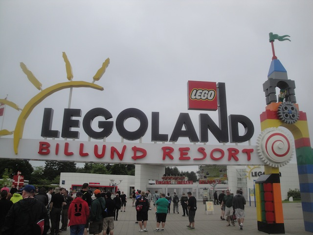
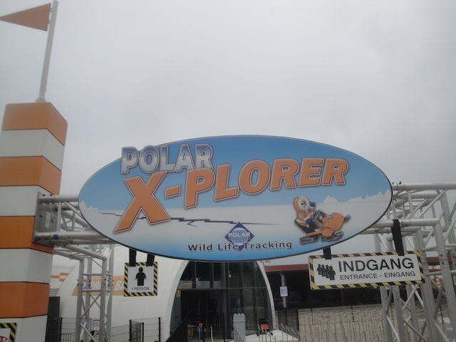
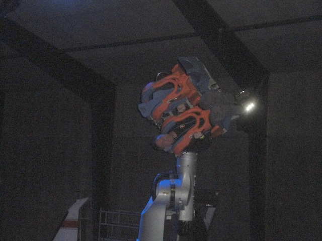
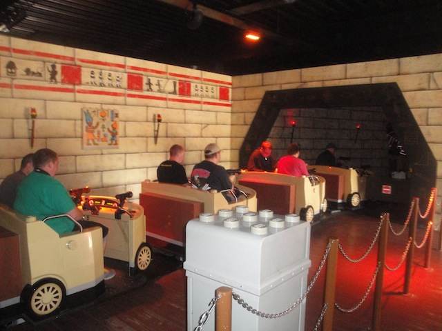
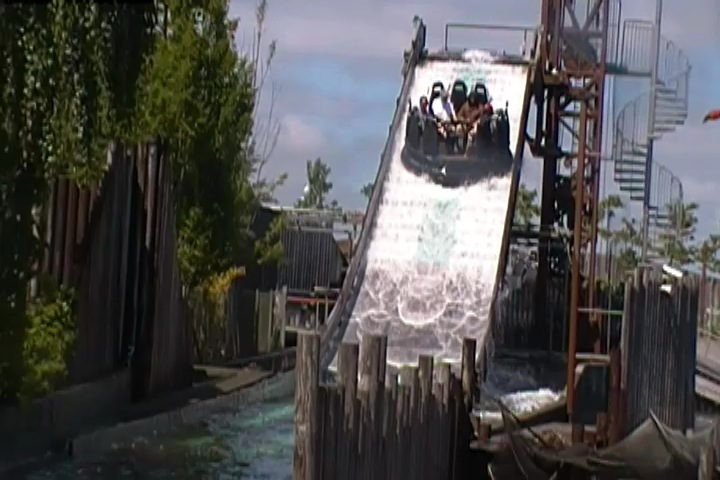
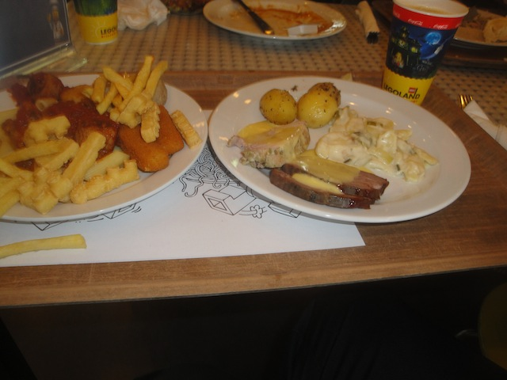
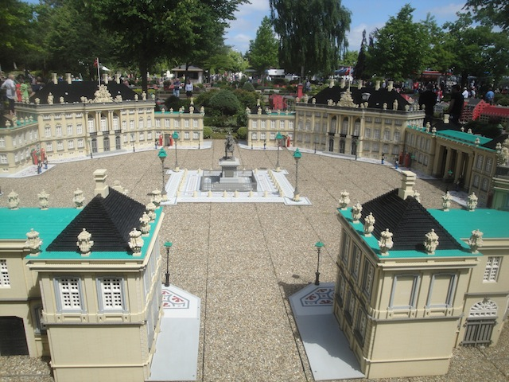

| |
Legoland Billund Review

While most of the parks we review here are primarily for locals and nothing special, the Legolands however, are an interesting bunch and Legoland Billund is definetly a fun park. I can't really say if its one of the better Legolands as I've only visited two different Legoland parks. But out of the two, this is the better one (though both parks are fun, and very similar). But hey. Legoland California is a lot of fun, and it's pretty interesting to compare all the differences between the different Legolands. And there are more differences between the different Legolands than just the stuff they show in the various different Minilands. I know all the Legolands, Legoland Billund included, get a reputation of just being for kids and that there's no reason to ever visit one of these parks and the only reason a coaster enthusiast would ever go to a park like this is simply to credit whore. And I'm not going to pretend that there aren't enthusiasts who'll just go, get the credits, and then leave (Really not smart considering how much you paid to get in here). But there is a lot of fun rides at these Legoland parks. They have some fun dark rides, some water rides, a great flat ride. And let's not forget that all in all, Legos are freaking awesome. I mean, they made a freaking Lego Movie. And not only was that a big hit, but they made many spin off movies including a Lego Batman Movie. So yeah. Just a little something for anyone who says that Legos are only for children. The box office statistics for the Lego Movie would like to speak to you. Also, f*ck you. I know I've ranted about that a lot in the past, and I could easily repeat myself, but let's focus on Legoland Billund. And it's just a ton of fun to see how creative they get with the legos, and all the fun stuff they do with it. And on top of that, they have some legitametly good rides, such as one of the best family coasters ever, as well as a freaking Top 10 Flat Ride. And there's just plenty of other really fun stuff that we'll go over in this review.
Rollercoasters
There is a link to a review of all the Rollercoasters at Legoland Billund.
Please keep in mind that there is no review of Flyvende Ørn because it didn't exist when I last visited.
Top Coasters
Polar X-plorer Review

Family Coasters
X-treme Racers Review

Powered Coasters
Dragon Review

Flat Rides
Here are the reviews of all the Flat Rides at Legoland Billund. All right. Enough dancing around the subject. We have to talk about Power Builder, as that is by far the best ride at Legoland Billund. I know people may be surprised and thinking that Polar X-plorer was the star attraction. And yeah. That's a really fun ride and all. And it does have some fun surprises of its own and is a brilliant fit for the park. But when you really boil it down, Power Builder is simply better! It is just f*cking crazy!!! There are just so many flips and crazy things that you can program this ride to do and I've already mentioned that it made it on our Top 10 Flat Rides List. Actually, for a park like Legoland, it's actually even better as it's a really accessible ride for families to ride together. Now some of you may be wondering how the hell that is possible if it's such a crazy flat ride? Well, here's the thing. When I talk about Power Builder, I'm talking about Level 5, which is where all the flips, sudden movements, spinning, and all that good stuff is. In fact, this is actually even better than the other Robot Arm at Legoland California for one simple reason. Here, you don't just have a Level 5 where you can go crazy. You actually get to program how crazy you want your ride to be. Yeah, they put limitations on it. So you can't try and cheat and make it go up to Level 6 (Trust me. If I could, I would). But even so, you can make Power Builder pretty damn crazy. And if you have really young kids, or are just a pussy yourself, you can ride the ride in Levels 1 and 2, which are some of the tamest rides imaginable. Seriously, Level 1 Power Builder could be in a kiddy area of a park and it'd blend right in. Level 3 is all right (I'm assuming), Level 4 is fun, but Level 5. Yeah. This is freaking nuts. And that's what makes it such a good ride. No matter what your taste is, you can find a good ride in Power Builder. =) All right. Now let's move onto the other flat rides. Let's start out with the most...unique one. Ghost. A Haunted House Walk Through. Now this is an intersting ride as it sort of acts like a dark ride. It's practically a walk through. You know all those walk throughs parks tend to have. They're pretty old school, but a lot of fun. But hey. This one has a lot of cool special effects. And legos. You can never go wrong with legos. So you may be wondering "How the hell does this qualify as a flat ride?". Simple. There's a mini drop tower at the end of this walk through. That's the actual ride. It's...intersting. The drop tower itself is nothing special. One of those giant frog hoppers. Yeah. This ride is basically a giant frog hopper. But you know what? The theming is so well done for this ride that you pretty much don't give a f*ck. It's a fun ride. And that's pretty much all that matters. Oh, and it's really unique. At least as far as I know. Maybe it exists at the other Legolands, but they certainly don't have it at Legoland California. Those are pretty much the only two flat rides. The only flats aside from those are a Rocking Tug as well as some teacups that I doubt spin very well. So the flat ride collection may not be that big, but they do have two really good flat rides that are both a ton of fun and fairly unique.

Yeah. This ride is as crazy as it looks.
Dark Rides
Here are the reviews of all the Dark Rides at Legoland Billund. Now the Legoland parks aren't doing so great in the dark ride department. At least not compared to their rivals, Disney and Universal. Both of those chains freaking dominate when it comes to dark rides. Cause yeah. Legoland Billund has a better dark ride collection than a lot of parks. Though...yeah. They pretty much only have one dark ride. Well, sort of two if you want to talk about the walk through part of Ghost. But we already talked about that in the flat ride section. So now there's only a few dark rides to discuss. The Temple. This is another one of those shooting dark rides. And yeah. These rides are a lot of fun. It's got a good Egyptian theme. You get to shoot lego mummies and even win some lego treasure. But at the same time, yeah. I suck at these rides. So no lego treasure for me. But don't worry. They have another dark ride for you to win treasure on. Well, you can't win treasure. But they have treasure. Yo Ho. Yo Ho. A lego's lifes for me. Yep. They have a Pirates of the Carribean knock off here at Legoland Billund. I really like that. Yes, it's far from the best knock off. The original is definetly better, and there are even knock offs that are better at other parks. But hey. You get to see lego farm animals, see a lego execution, wave hello to the lego pirates, and even see some lego treasure. It's just an overall fun dark ride. The more lego knock offs we have, the better.

Aww. I didn't win any of the lego treasure. Guess I'll just have to loot it from the others by becoming a lego pirate.
Water Rides
Legoland Billund has three water rides, and they are pretty good. Or at least I enjoyed the two I rode. Let's start out with their rapids ride. Viking's River Splash. Yes. They have a rapids ride and it's themed to Vikings. And this is certainly one of the more...unique water rides. Not good enough to crack our Top 10 Water Rides List, but if Legoland expanded on this and upgraded it for another one of their upcoming Legolands, it'd very likely make the list. But regardless, Vikings River Splash is a really intersting water ride for one main reason. The Elevator Lift and drop. This ride...just has an elevator lift. Random, but cool. And the drop is a lot of fun too. On top of that, it has some cool lego Vikings, some pretty gardens, and some fun fountains that'll get you wet. So why isn't this a Top 10 Water Ride? Simple. It lacks one important thing in a rapids ride. Rapids. Yeah. Aside from the drop, it's pretty tame. I get that it's a Legoland park, but come on. If the Disney parks can have rapids on their rapids ride, plus drops, then you can have rapids too. But apparently there's more of these. Hopefully they perfect the ride in the other Legolands. The other main water ride they have that I didn't ride was their log flume. I know very little about what it actually does. All I know is that it's themed to Native Americans (All European parks must have an America themed section), and it's themed to canoes. Cool. I'm sure there's a lot of cool stuff on the ride. Finally, the last water ride which I did ride, was their Water Whip. They're always fun. Plus, you can get some laterals on those rides.

Ooh! Pretty elevator!! =)
Dining
OK. I'm not going to lie. I am not a fan of the food at Legoland Billund. The place I ate at was the Family Buffett. The food was...OK. It seemed to be divided into kid food and...adultish food. The kidish food was essentially chicken fingers and lego fries. If you've ever eaten chicken nuggets from the frozen section of your grocery store, it's basically that. And while the Lego Fries do look fun, they're not very good fries. The adult stuff...I'm not sure what exactly it was. It was better than the chicken, but it wasn't that good. Yeah. Amusement parks don't often have the best food ever, but even compared to most other parks, it's not...the best food. Maybe they have better food in the other resteraunts. But I just wasn't a huge fan of the Family Buffett. But hey. Free Ice Cream. That's good. I really hope they have the Apple Fries, or other stuff. Because from my limited knowledge, Legoland California has the better food. I know that's not exactly saying much, but it's true.

"LEGO FRIES ARE POTATOS!!!" =P
Theming and Other Attractions
Here are the reviews of all the other stuff at Legoland Billund. As far as theming goes...LEGOS!!! LEGOS EVERYWHERE!!!! So yeah. They get really creative with the theming. And not only do they take advantage of the legos, but they have a ton of theming with it. They have a cool dark ride section on Dragon that's a ton of fun. Polar X-plorer has a lego safari at the end. No need to worry about the polar bears. They can just make more with legos. And Boom! Who needs polar bears when you can have Lego Polar Bears? There's all the Lego Pirates in the knock off, and the cool mirror maze in Ghost also has a ton of cool lego stuff before you get to the drop tower. And that's only scraping the surface. They have a bunch of cool rides with all sorts of lego scenery that looks like something you'd dream about building with legos. And then of course, we have Miniland. Miniland is basically an exhibit of all these famous American places recreated with legos. Miniland is a ton of fun to visit because at each different Legoland, you get a different presepective as you learn about what country you are in and what they value all while admiring all sorts of hard work that went into building these exhibits. Now I'm not sure what the majority of the landmarks are supposed to be. I know the changing of the guard in Copenhagen. But the rest, I have no clue. Sorry for being such a crappy Dane. But hey. You can look over all of it on a monorail. I wish Legoland California had a monorail for their Miniland. That'd be cool. And if you look around Legoland, you just see a ton of little jokes around the park. So yeah. They really get creative with the legos, as this counts both as theming as well as something else to do, as yeah. There's plenty of places in the park where you can play with legos. Hell, the line for Ghost is just playing with legos. OK. We have to talk about the Legoland tradition. The Firefighter Academy. You get into teams, and you wind up having to pump your way to the fire and then score points by putting it out. Needless to say, I suck at this game. Seriously, if I am on your team, you will lose. I'm that bad at this. They also have an aquarium that you can visit. Shockingly enough, the fish are not made of legos. Hmm, good to see they moved to flesh and blood creatures here. They also have another bread baking section here. Those seem to be popular in Scandinavia. You pay a couple Euros, and they give you some dough for you to bake over an open fire. It's actually pretty cool. And the bread is good too. I really wish that this would spread to the other Legolands as it's really cool and I'm pretty sure it's only here (I know for sure it's not in the American Legolands). Oh, and if you get bored, feel free to play Nintendo. It doesn't even have to be a game about Legos. So yeah. There's plenty of random stuff to do at Legoland Billund.

I may be a crappy Dane, but I at least know that place. =)
In Conclusion
Legoland Billund is a really fun park to spend a day to just goof off at and have fun. I know some enthusiasts are turned off by the park because they don't have a bunch of huge coasters that flip, launch, and do all sorts of crazy stuff. But that's not the kind of place that Legoland Billund is. Besides, they do have some good rides. Polar Xplorer is a really fun family coaster with a fun little surprise, and you go insane and do all that good stuff on Ice Pilots. But mainly, Legoland is just a place to have fun, ride some fun rides, and just really explore and see all that you can do with Legos. It's a place where you can see Legos go from just a cool toy you used to play with (Who am I kidding, you still use legos and I know it) to something that you just suddenly see the possibility that you can have with legos. You know you'll never create anything like this, but it still just looks incredible, seeing all that they built. Seeing such cool replicas, seeing how much effort went into building this place. You can see a dark ride, and everything is made of legos. Lego animals, lego magic, lego this, lego that. It really feels so cool. Like something you only imagined, brought to life. I don't care what anyone says about Legoland. This place is freaking awesome and if you legos at all, definetly stop on by and check out Legoland Billund. It really is a fun park.
Enthusiast FAQs.
*Are there kiddy coaster restrictions? - Legoland Billund technically doesn't have a kiddy coaster. But if you're talking about Dragon (which is not a credit), yes. You can ride.

Tips
*Don't just treat Legoland Billund like a credit whoring stop.
*Pick Level 5 on Ice Pilots.
*See all the cool stuff in Miniland.
*Make sure you don't step on any legos. ;)
*Have Fun!!!
Theme Park Category:
Theme Park
Location
Billund, Jylland, Denmark
Last Day Visited
June 18, 2014
Video
I'm not sure if I have enough video to make a Legoland Billund video.
Complete Update List
2014
TPR's Scandinavia Trip
Here's a link to the parks website.
Home
|